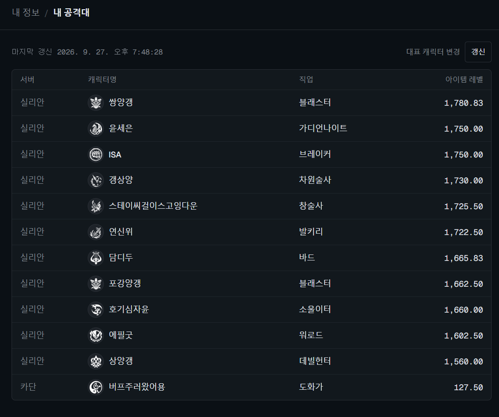
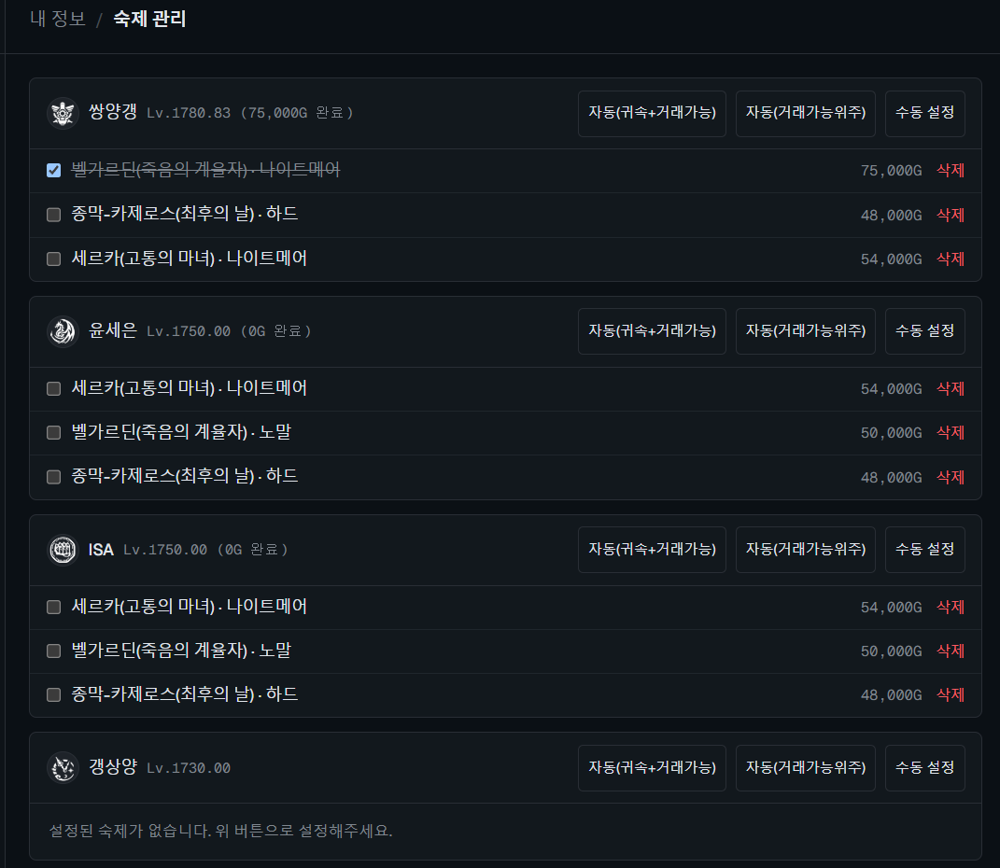
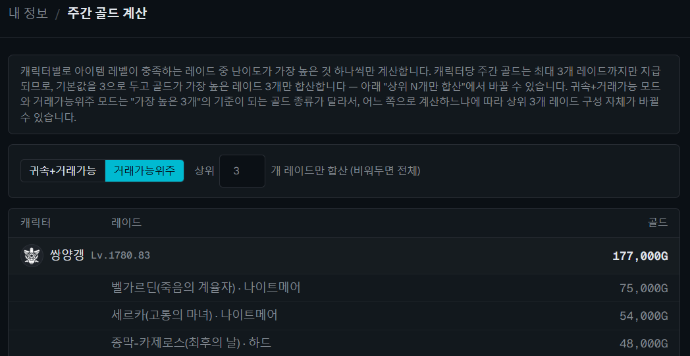
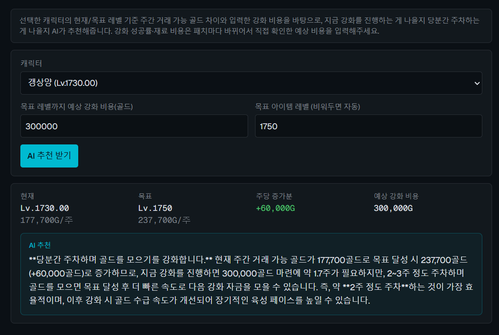

데이터 원칙
임의 데이터 미사용사용자가 확인해준 사실이거나, 로스트아크 공식 Open API·CDN이 실제로 내려주는 데이터만 사용합니다.
로스트아크 AI 에이전트 플랫폼 · 개인 프로젝트
로스트아크 게임 정보를 자동으로 수집·판단해 Slack으로 전달하는 AI 에이전트를 여러 개 혼자 기획부터 배포·운영까지 담당하는 개인 프로젝트입니다. 배포하고 끝나는 게 아니라, 운영 중에도 스스로 품질을 점검하는 피드백 에이전트까지 구현했습니다.

AI 활용 기록
TFT-gogo에서는 담당 merged PR 120개를 분석해 AI 활용과 사람 검증 비중을 퍼센트로 정리했고, Lojipsa에서는 배포 후에도 AI가 스스로 자기 출력을 채점하는 피드백 루프를 직접 설계·운영하고 있습니다.
데이터 원칙
임의 데이터 미사용사용자가 확인해준 사실이거나, 로스트아크 공식 Open API·CDN이 실제로 내려주는 데이터만 사용합니다.
배경지식 주입
환각 방지 설계admin이 편집하는 배경지식을 프롬프트에 주입해, 모델이 검증된 정보 안에서만 답하도록 설계했습니다.
LLM-as-judge
매일 자동 채점합성 시나리오로 핵심 기능을 매일 자동 실행하고, 다른 LLM 호출로 PASS/FAIL을 채점해 Slack에 보고합니다.
Found in Practice
실제 버그 2건 발견Agents
숙제 체크리스트를 매일 발송하고, 관심 재료의 가격 변동을 30분 주기로 감시해 Slack으로 전달합니다.
모험 섬, 카오스게이트, 필드보스, 항해 같은 시간 제한 콘텐츠가 다가오면 카운트다운 알림을 보냅니다.
공식 공지를 크롤링해 Claude로 핵심 내용만 요약하고, 관리자가 등록한 배경지식 범위 안에서만 답하도록 제한했습니다.
실 유저 데이터 없이 합성 시나리오로 핵심 LLM 기능(원정대 방향성 추천)을 매일 자동 실행하고, 그 출력을 다시 다른 LLM 호출로 채점(PASS/FAIL)시켜 운영 품질을 스스로 점검합니다.
대표 캐릭터 하나만 등록하면 전체 로스터를 불러오고, 캐릭터별 주간 레이드 체크리스트와 예상 주간 골드를 계산해줍니다.
현재/목표 아이템 레벨의 주간 골드 차이와 강화 비용, admin이 등록한 최신 게임 지식을 함께 Claude에 전달해 강화 vs 주차 판단을 추천합니다.
Player Tools

대표 캐릭터 하나만 등록하면 로스트아크 Open API로 전체 로스터를 서버, 직업, 아이템 레벨까지 자동으로 불러옵니다.

캐릭터당 최대 3개 레이드라는 실제 게임 규칙을 반영해, 귀속+거래가능·거래가능위주 모드로 골드가 가장 높은 레이드를 자동 추천하거나 수동으로 설정할 수 있습니다.

캐릭터별로 아이템 레벨이 충족하는 레이드 중 난이도가 가장 높은 것만 계산하고, 상위 N개 레이드로 골드 총합 기준을 자유롭게 바꿔볼 수 있습니다.

현재/목표 레벨의 주간 골드 차이와 입력한 강화 비용을 근거로, 지금 강화할지 당분간 주차할지를 Claude가 구체적인 수치와 함께 추천합니다.
AI Reliability
01 / 데이터 원칙
사용자가 직접 확인해준 사실이거나, 로스트아크 공식 Open API·CDN이 실제로 내려주는 데이터만 사용합니다. 캐릭터 직업 아이콘도 자체 제작 대신 공식 CDN의 직업 엠블럼 이미지를 가져다 씁니다.
02 / 배경지식 주입
공지 요약, 원정대 방향성 같은 기능은 admin이 편집 가능한 "배경지식" 텍스트를 프롬프트에 주입해서, 모델이 아는 척하지 않고 검증된 정보 안에서만 답하도록 설계했습니다.
03 / LLM-as-judge
합성 시나리오로 핵심 기능을 매일 자동 실행하고, 그 출력을 다시 다른 LLM 호출로 PASS/FAIL 채점시켜 Slack에 보고합니다. "동작한다"와 "운영 가능하다"의 차이를 스스로 확인하는 장치입니다.
Troubleshooting
피드백 에이전트를 로컬에서 검증하는 과정 자체에서, 기존에 있던 두 가지 문제를 실제로 찾아냈습니다.
공용 Claude 클라이언트가 응답의 첫 콘텐츠 블록이 항상 텍스트라고 가정하고 있었는데, 상위 모델이 사고 과정(thinking) 블록만 반환하는 경우가 실제로 있었습니다. type이 "text"인 블록을 명시적으로 찾도록 고치고, 못 찾으면 예외 대신 빈 결과를 반환하도록 정리했습니다.
채점 자체가 실패한 경우와 실제 PASS를 구분하지 않아서, 채점 불능 상태가 Slack에 "정상"으로 잘못 보고되고 있었습니다. 판정 보류(🟡) 상태를 따로 두어 진짜 이상 상황을 놓치지 않도록 고쳤습니다.
Deploy & Operate
t3.micro(1GB)에서 docker compose up --build를 직접 돌리면 서버 자체가 응답 불능이 되는 걸 겪었습니다. 빌드가 필요한 재배포에만 t3.small로 일시 업사이징했다가 다시 내리는 절차로 정리해, 평상시 비용은 그대로 두고 안정성을 확보했습니다.
프론트엔드는 Vercel에 GitHub push로 자동 배포하고, 백엔드는 EC2 + Docker + Nginx + Certbot으로 별도 운영합니다. 인스턴스를 재시작할 때마다 IP가 바뀌는 걸 감안해 Route 53 레코드 갱신까지 포함한 재배포 절차를 문서화했습니다.